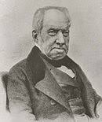
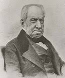

Rama de la Biología, que se encarga del estudio de la célula.

Unidad anatómica, fisiológica y morfologica de todo ser vivo, esta dotada de vida propia, por si sola puede nutrirse, relacionarse y reproducirse.
 



Los seres vivos de la naturaleza, según la complejidad de su estructura, se pueden organizar en dos grandes grupos:
- Formas de vida simples.
- Constituidas por una sola célula
- Una sola célula se encarga de todas las funciones.
- Fromas de vida de considerable complejidad.
- Constituidas por miles de células.
- Con orgánulos especializados para cada función
Estos seres vivos a su vez se dividen en 5 reinos:

Microscópicos:
- No se pueden ver a simple vista
Ej:Estafilococos y celulas musculares

Macroscópicos:
- Se pueden ver a simple vista.
Ej: Yema del huevo de algunas aves, como el avestruz
Esférica:Linfocitos (glóbulos blancos).
Discoidal:Glóbulos rojos.
Poliédricas:Céluilas vegetales.
Alargadas:Fibras musculares.
Estrelladas:Neuronas